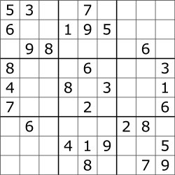

Something about Xiaoran Peng
My favorate class in University of Michigan is EECS592 AI foundation. In this class, I created a lot of mini game in Python with artificial intelligence algorithm. One of them is artificial Intelligence sudoku.

If you do want to know how I achieve this please take EECS 592 next semester in michigan, or read the book artificial intelligence: a morden approach.
If you don't want to either take the class or read the book, you can go to my github.
Well, if you do not (hate to) read the code or just what solve your sudoku problem in 1s. Click the button.
I love dogs, especially their meme.